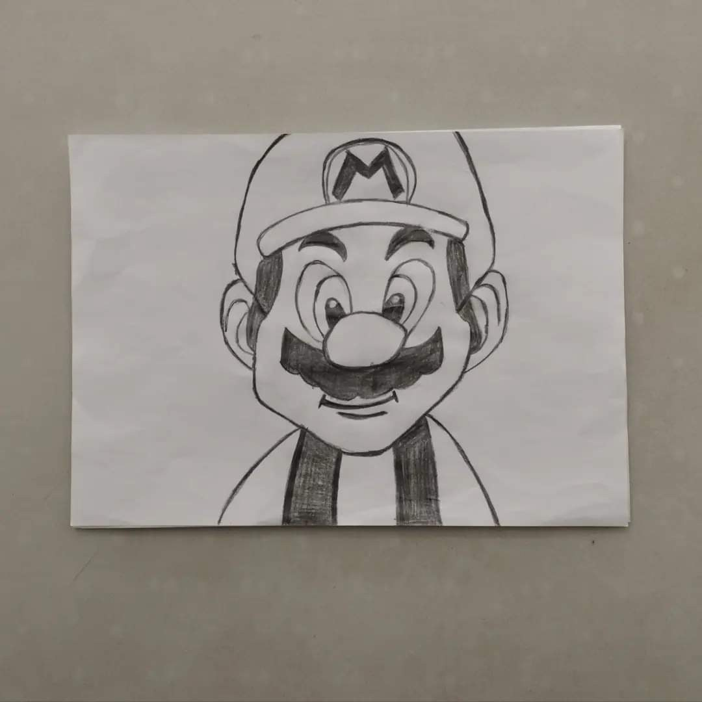
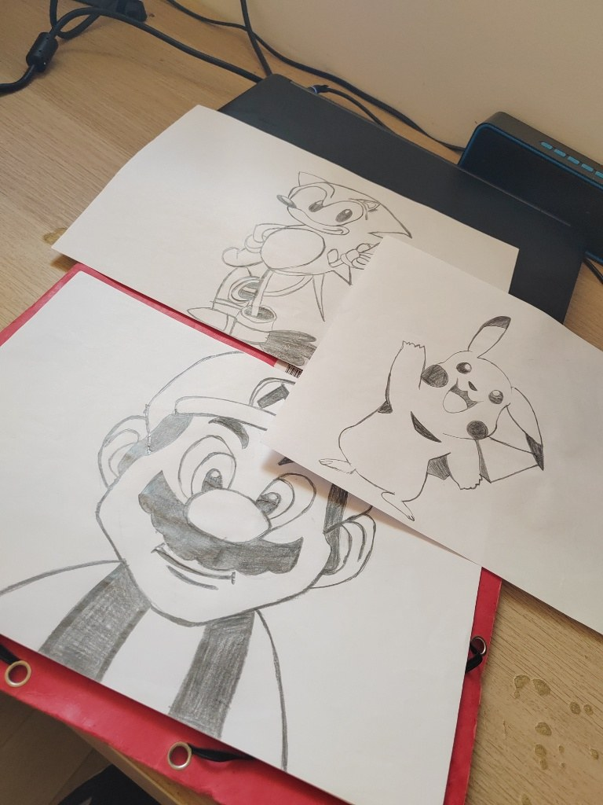
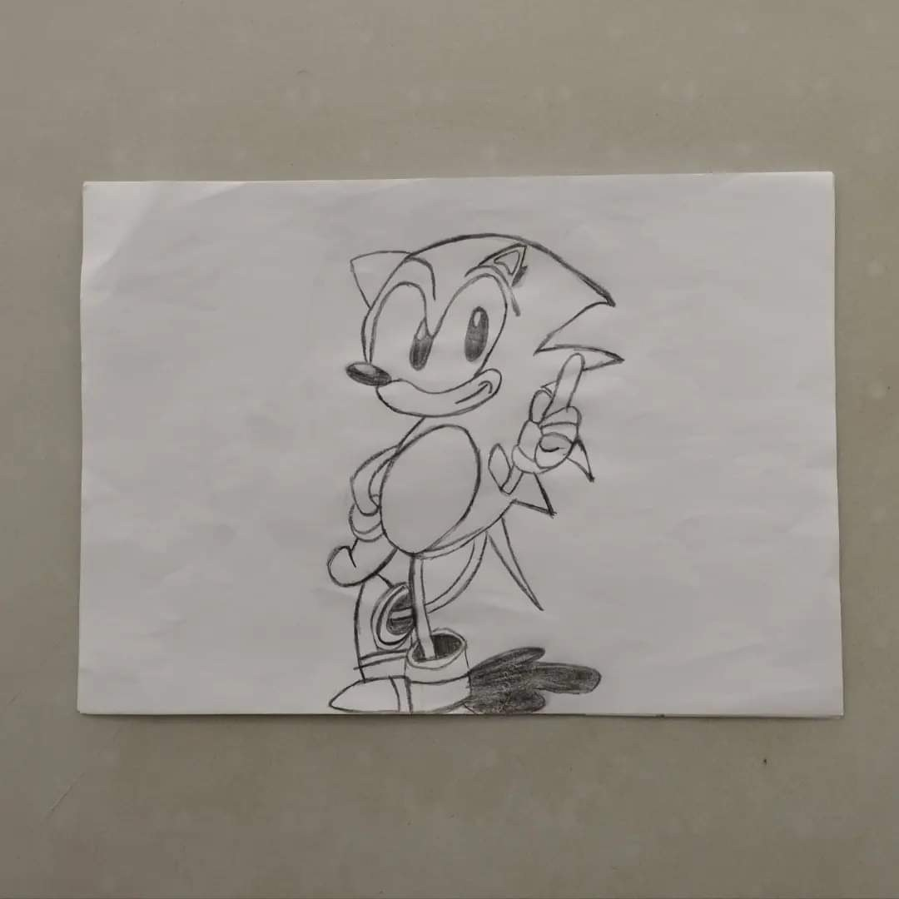
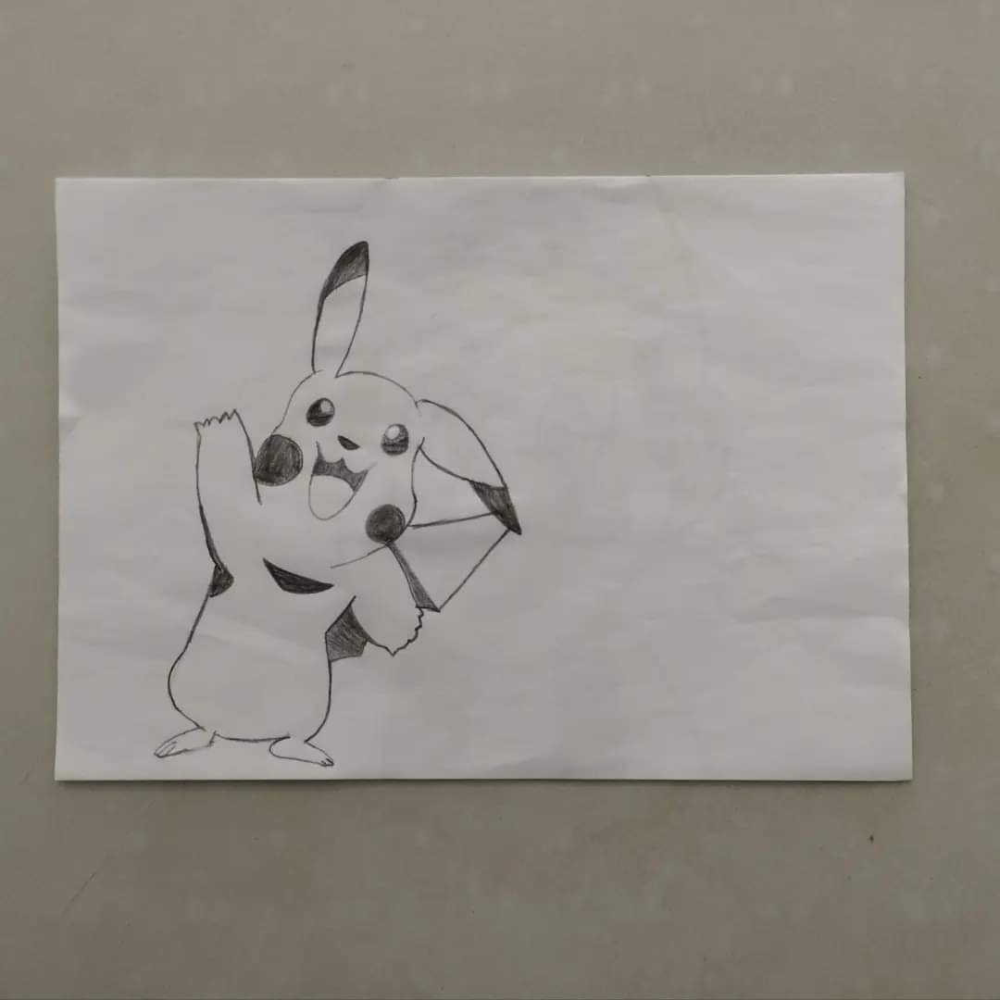
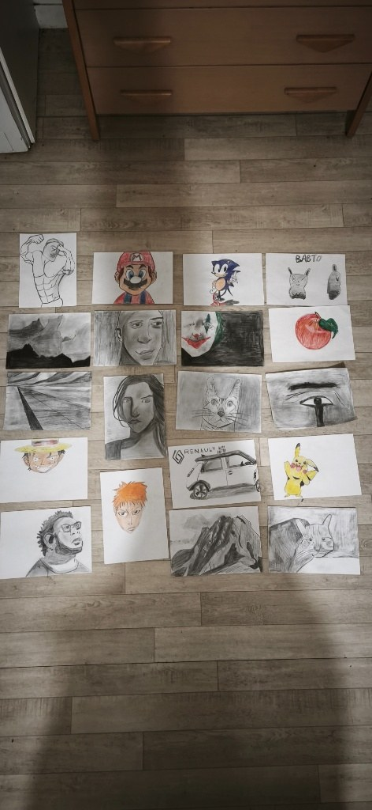

NINTENDO // CRAYON
Super Mario — Portrait
Crayon graphite sur papier A4 • Étude d'expression et d'ombrage.
Développeur Informatique (BTS SIO SLAM) • Créateur de Jeu Vidéo (Godot Engine) • Illustrateur & MAO
Du développement logiciel & web (GitHub) à la création d'un projet de jeu vidéo sur Godot Engine, en passant par l’illustration gaming/manga (DeviantArt) et la production musicale (SoundCloud). Un profil complet qui réunit code, visuel et son.

Diplômé d’un BTS SIO option SLAM (Solutions Logicielles et Applications Métiers), je maîtrise la conception d’applications web (PHP, SQL, MySQL, architecture MVC, POO) ainsi que le diagnostic et la maintenance sur environnements GNU/Linux et Windows.
Je travaille actuellement sur un projet de jeu vidéo indépendant sous Godot Engine, où j'applique la programmation orientée objet, la logique de gameplay, la gestion des scènes et le versionnement via GitHub.
Parce qu'un jeu vidéo repose sur l'alliance du code, de l'image et du son, je développe en parallèle mes univers visuels sur DeviantArt (dessin traditionnel au crayon et numérique autour du gaming et du manga) et mes ambiances sonores sur SoundCloud via la MAO.
Cette synergie me permet d'intervenir aussi bien sur les aspects techniques (scripting, architecture, optimisation) que sur la direction artistique et sonore d'un projet interactif.
Sélection de mes dessins réalisés au crayon papier et mis en couleur, rendant hommage aux mascottes du jeu vidéo et de l'animation. Retrouvez l'ensemble de mes publications sur DeviantArt (@mentaldefeur).

Crayon graphite sur papier A4 • Étude d'expression et d'ombrage.

Crayon graphite sur papier • Pose rétro emblématique.

Crayon graphite sur papier • Lignes claires et expression joyeuse.
Série complète des trois mascottes réunies après encrage et ombrage.

20 planches : Mario, Sonic & Pikachu en couleur, Luffy, Ichigo, portraits & paysages.
Découvrez mon projet de jeu vidéo en cours de création sur Godot Engine ainsi que mes espaces dédiés au code, au dessin et à la musique.
Conception et développement actif d'un jeu vidéo sous le moteur open-source Godot Engine. Ce projet me permet de réunir l'ensemble de mes compétences : programmation de mécaniques de jeu, structuration des scènes et nœuds, intégration graphique et création d'ambiances sonores originales.
github.com/MentalDeFeur
Dépôts de projets personnels, scripts système GNU/Linux, développement web (PHP, JS, HTML/CSS) et expérimentations open-source.
Consulter les dépôtsdeviantart.com/mentaldefeur
Galerie artistique regroupant mes dessins au crayon, croquis numériques, fan-arts gaming (Mario, Sonic, Pokémon) et illustrations manga.
Visiter la galerie DeviantArtsoundcloud.com/mentaldefeur
Compositions musicales, instrumentales et créations audio réalisées en MAO (Musique Assistée par Ordinateur).
Écouter les pistes audioProjet Personnel • Game Dev, Art & Audio
Safran Aircraft Engines • ITS Group S.A. • Safran Massy
Lycée Joseph Gaillard (Fort-de-France)
Fit' Gym (Martinique)
EPNAK, Soisy-sur-Seine
Consolidation du projet professionnel en informatique et validation des compétences clés.
Lycée Joseph Gaillard (Martinique)
Solutions Logicielles et Applications Métiers : développement d'applications, bases de données relationnelles et architectures logicielles.
Lycée Joseph Gaillard • Mention Bien
Systèmes d'Information de Gestion, bases de données et économie numérique.
Français & Créole : Langues maternelles
Anglais : Niveau B2 (Technique & Professionnel)
Passions : Godot Engine, Open Source, Veille Hardware, Dessin Numérique, MAO
Disponible en Île-de-France et en télétravail pour des opportunités en développement web/logiciel, jeu vidéo (Godot Engine), support systèmes ou projets créatifs.